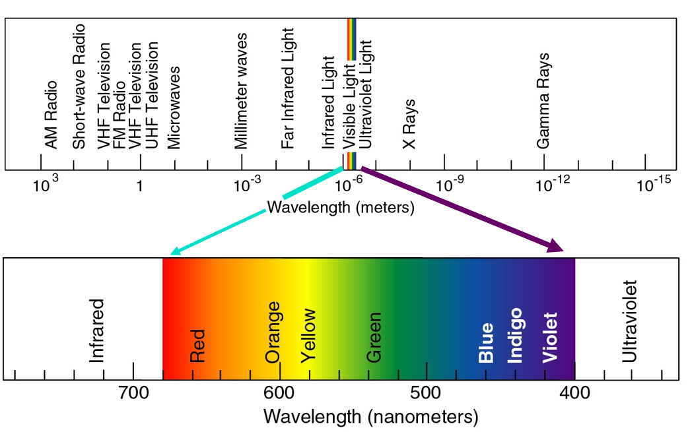
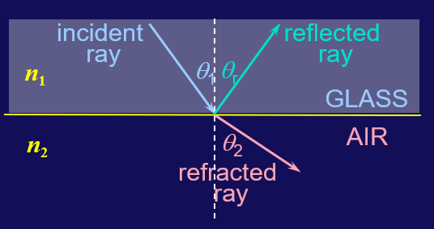
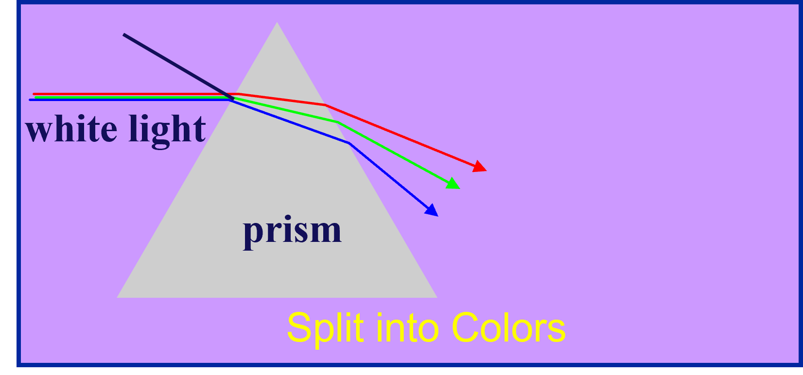
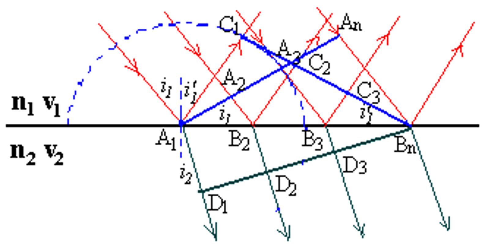
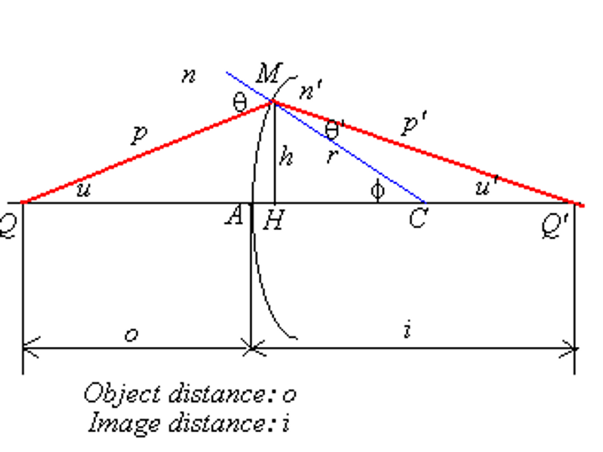
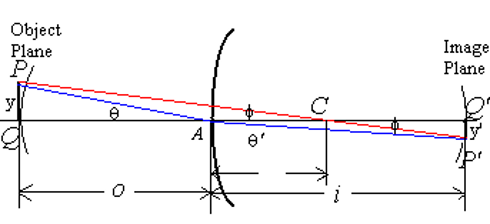
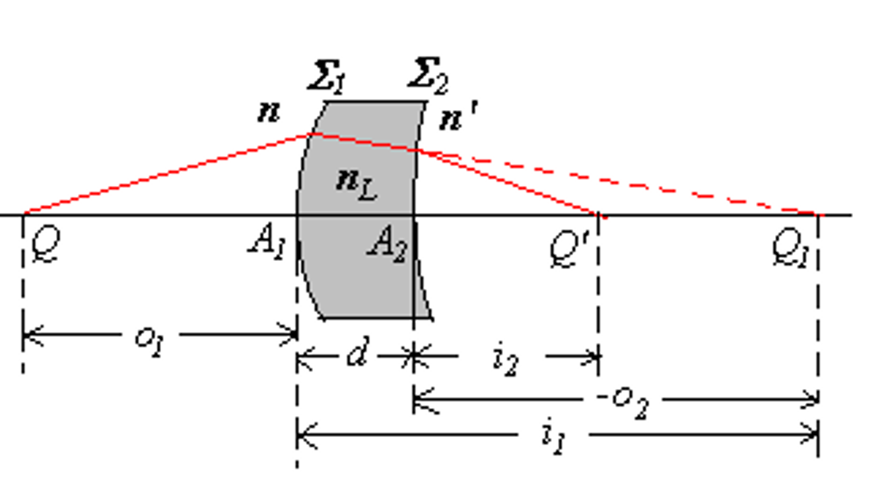
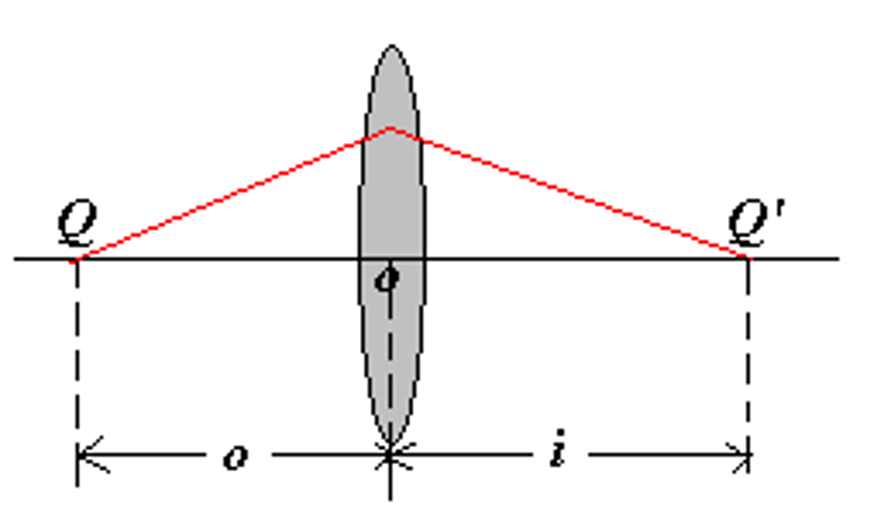
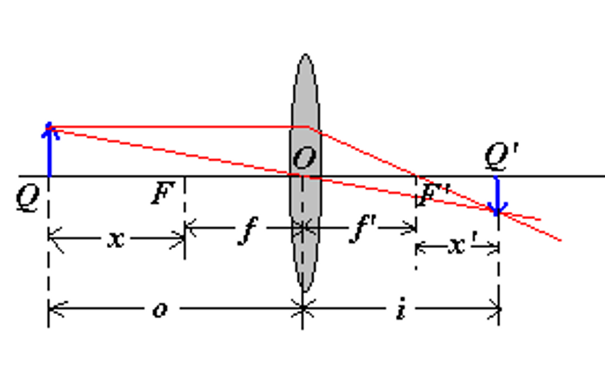

几何光学¶
约 3484 个字 23 张图片 预计阅读时间 14 分钟
可见光¶

可见光
- 可见光波长范围：\(400nm - 700nm\)
- 可见光频率范围：$7 \times 10^{14} Hz - 4 \times 10^{14} Hz $
- 波长与频率对应的关系：\(\lambda f = c\)
- 人眼最敏感的可见光波长为 \(550nm\) 左右，为黄绿光
- 波长越长，则频率越低、能量越低，因此红光能量最低，紫光能量最高
波的多普勒效应¶
多普勒效应
$$ f = f_0 \dfrac{v \pm v_0}{v \pm v_s} $$ 其中 \(v_0\) 表示观测者的运动速度，\(v_s\) 表示波源的运动速度
对于光波来说，需要使用相对论多普勒效应 $$ f = f_0 \dfrac{ \sqrt{1 - \dfrac{u^2}{v^2} } }{ 1+\dfrac{u}{v} \cos\theta } $$
其中 \(f_0\) 是在波源保持静止的参考系中测得的频率，\(\theta\) 是相对运动方向与光波传播方向的夹角
-
横向（transverse）多普勒效应：\(\theta = \dfrac{\pi}{2}\) $$ f = f_0 \sqrt{1 - \dfrac{u^2}{v^2} } $$
-
纵向（longitudinal）多普勒效应：
-
波源靠近 \(\theta = \pi\): $$ f = f_0 \sqrt{\dfrac{1+\frac{u}{c}}{1-\frac{u}{c}}} $$
-
波源远离 \(\theta = 0\)： $$ f = f_0 \sqrt{\dfrac{1-\frac{u}{c}}{1+\frac{u}{c}}} $$
-
对于光波，会出现红移和蓝移现象
-
红移：光源和观察者彼此远离，频率减小，波长增大，光谱向红光靠近 $$ f = f_0 \sqrt{\dfrac{1-\frac{u}{c}}{1+\frac{u}{c}}} $$
-
蓝移：光源和观察者彼此接近，频率增大，波长减小，光谱向蓝光靠近 $$ f = f_0 \sqrt{\dfrac{1+\frac{u}{c}}{1-\frac{u}{c}}} $$
几何光学¶
Info
-
几何光学：在光沿直线传播的情况下讨论问题，遇见的物体大小远大于光的波长\(\lambda\)
mirrors(反射镜)， lenses(透镜)， prisms(棱镜)
-
物理光学：光的传播通过狭缝或是遇见的物体尺寸非常小，足以和光的波长\(\lambda\)相比，需要考虑波动性
reflection(反射)， refraction(折射)， interference(干涉)， diffraction(衍射)， polarization(偏振)
几何光学三定律
- 光沿直线传播：光在均匀介质中沿直线传播
- 光的反射定律：反射角等于入射角
-
光的折射定律：折射角、入射角和折射率之间存在如下关系 $$ n_1 \sin \theta_1 = n_2 \sin \theta_2 $$
其中 \(n_1\) 和 \(n_2\) 分别是两种介质的折射率，\(\theta_1\) 和 \(\theta_2\) 分别是入射角和折射角
折射率的定义：\(n = \dfrac{c}{v}\)，其中 \(c\) 是真空中的光速，\(v\) 是介质中的光速，根据麦克斯韦方程组，我们知道折射率为 \(n = \sqrt{\kappa_e \kappa_m}\)
在相同的介质中，不同频率的光的折射率也有所不同，频率越高，折射率越大 $$ n_{blue} = 1.53, \quad n_{red} = 1.52 $$
全反射¶
当光从光密介质射入光疏介质（如从玻璃或水到空气），当入射角大于临界角时，光就不会再发生折射，而是全部被反射回光密介质，这种现象称为全反射

当入射角恰好达到临界角时，折射角为 \(\theta_2 = 90^\circ\)，又由 \(n_1 \sin \theta_1 = n_2 \sin \theta_2\)，可得 $$ \sin \theta_1 = \dfrac{n_2}{n_1} $$
Tip
空气中的折射率为 1，因此我们可以以下公式求解某介质的折射率 $$ n = \dfrac{\sin \theta_1}{\sin \theta_2} $$ 其中 \(\theta_1\) 为空气中的入射角，\(\theta_2\) 为折射角
色散¶

色散是指白光或复色光在通过介质时，由于其中不同波长的光由于折射率的不同而产生的不同程度的偏折，从而使得白光被分解为各种单色光的现象。这是光的波动性的一种表现
在相同的介质中，不同频率的光的折射率也有所不同，频率越高（波长越短），折射率越大；频率越低（波长越长），折射率越小
- 短波长的光（如紫光）波长小，频率高，折射率大，偏折角大
- 长波长的光（如红光）波长大，频率低，折射率小，偏折角小
求棱镜的折射率

原光线与经过棱镜折射后的光线夹角为 \(\delta\)，棱镜的顶角为 \(\alpha = i_2 - i'_2\)
要求出棱镜的折射率，我们需要知道偏移角 \(\delta\) 的最小值。对 \(\delta\) 关于入射角 \(i_1\) 求导，令导数为 0，即可求得最小值 $$ \dfrac{d\delta}{di _ 1} = 1 + \dfrac{di' _ 1}{di _ 1} = 0 $$ 因此我们知道此时 \(i_1 = i'_1\)，带入求得 \(\delta_{min} = 2i _ 1 - \alpha\) 后，再带入折射定律，即可求得折射率 $$ n = \dfrac{\sin \left( \dfrac{\delta _ {min} + \alpha}{2} \right) }{\sin \dfrac{\alpha}{2}} $$
惠更斯原理¶
惠更斯原理
波前（例如球面波或平面波的最边缘）上的每一点都可以被看作是一个新的次波源，这些次波源会以相同的速度向外发出次级波前。通过将所有这些次级波前叠加起来，可以得到新的总波前。这意味着，任何时刻的总波前都是由之前所有点产生的次级波前组合而成的。


惠更斯原理解释光的反射和折射

-
反射： $$ A_1 C_1 = A_n B_n = v_1 t_n $$ $$ \Delta A_1 C_1 B_n \cong \Delta B_n A_n A_1 $$ $$ \therefore \angle A_n A_1 B_n = \angle C_1 B_n A_1 $$ 最后就可以得到反射定律：反射角等于入射角 $$ \Rightarrow i_1' = i_1 $$
-
折射： $$ \angle D_1 B_n A_1 = i_2 $$ $$ \sin i_2 = \frac{A_1 D_1}{A_1 B_n}, \quad \sin i_1 = \frac{A_n B_n}{A_1 B_n} $$ $$ \therefore \frac{\sin i_1}{\sin i_2} = \frac{A_n B_n}{A_1 D_1} = \frac{v_1 t}{v_2 t} = \frac{v_1}{v_2} $$
这时我们把 \(v=\dfrac{c}{n}\) 带入上式，就可以得到折射定律 $$ \dfrac{\sin i_1}{\sin i_2} = \dfrac{n_2}{n_1} $$
费马原理¶

光在介质中的运动速度小于真空中的光速，在同等的时间内，光在介质中的运动距离要更短。我们将光程定义为在相同的时间内，光在介质中的运动距离乘以介质的折射率，也就是说，光程相当于光在真空中运动的“等效距离” $$ L = n_1 s_1 + n_2 s_2 $$ 其中 \(s_1\) 和 \(s_2\) 分别是光在两种介质中的实际运动距离，\(n_1\) 和 \(n_2\) 分别是两种介质的折射率
对于更一般的情况，我们采用积分的形式 $$ L = \int n ds $$
费马原理
费马原理是指，若光线在传播过程中可以成像，那么光程的变分为零（对于某一个变量求偏导为零，也就是光程取极值），即 $$ \delta L = \delta \int n ds = 0 $$
使用费马原理证明反射和折射

如图所示，光在空气中照射到介质发生反射，光程为 $$ L = \sqrt{a^2 + x^2} + \sqrt{b^2 + (d-x)^2} $$
对光程求变分，令 \(\delta L = 0\)，即 $$ \dfrac{dL}{dx} = \dfrac{x}{\sqrt{a^2 + x^2}} - \dfrac{d-x}{\sqrt{b^2 + (d-x)^2}} = 0 $$ 于是我们就得到 $$ \dfrac{x}{\sqrt{a^2 + x^2}} = \dfrac{d-x}{\sqrt{b^2 + (d-x)^2}} $$ 即 $$ \sin \theta_1 = \sin \theta_2 \Rightarrow \theta_1 = \theta_2 $$ 反射角等于入射角，这就是反射定律

如图所示，光在从折射率为 \(n_1\) 的介质射入折射率为 \(n_2\) 的介质，光程为 $$ L = n_1 \sqrt{a^2 + x^2} + n_2 \sqrt{b^2 + (d-x)^2} $$
对光程求变分，令 \(\delta L = 0\)，即 $$ \dfrac{dL}{dx} = n_1 \dfrac{x}{\sqrt{a^2 + x^2}} - n_2 \dfrac{d-x}{\sqrt{b^2 + (d-x)^2}} = 0 $$ 于是我们就得到 $$ n_1 \dfrac{x}{\sqrt{a^2 + x^2}} = n_2 \dfrac{d-x}{\sqrt{b^2 + (d-x)^2}} $$ 即 $$ n_1 \sin \theta_1 = n_2 \sin \theta_2 $$ 这就是折射定律
成像¶
光线经过透镜折射或者镜面反射后，会在一定位置形成物体的像，像分为实像和虚像，成像的物体也可分为实物和虚物


- 实像：经过折射或反射后的实际光线通过同一点，就称在交点处形成实像
- 虚像：经过折射或反射后的光线不通过同一点，但它们的反向延长线交于一点，就称在交点处形成虚像
- 实物：出发光线交汇于同一点（从同一点出发）
- 虚物：出发光线不交汇于同一点，但出发光线的延长线交于一点
根据费马原理我们知道成像时所有的光线等光程。
我们讨论的问题一般是物体从透镜左边发出光线，在透镜右侧成像，因此称左侧为物方，右侧为像方。
球面镜成像¶

我们首先讨论球面镜折射成像的规律，在上图中，点 \(C\) 为球心，\(r\) 为半径，\(Q\) 和 \(Q'\) 分别是物体和像的位置，物和像距离球面的距离分别为 \(o\) 和 \(i\)
首先在三角形 \(QCM\) 和 \(Q'CM\) 中使用正弦定理
其中 \(n \sin \theta = n' \sin \theta'\)，\(\theta - u = \theta' + u' = \phi\)
于是得到
我们再使用余弦定理，并带入 \(\cos \phi = 1 - 2\sin^2 \dfrac{\phi}{2}\)
代回前面的式子就得到 $$ \Longrightarrow \dfrac{o^2}{n^2 (o+r)^2} - \dfrac{i^2}{n'^2 (i-r)^2} = -4r \sin^2 \dfrac{\phi}{2} \left[ \dfrac{1}{n^2 (o+r)} + \dfrac{1}{n'^2 (i-r)} \right] $$
上面这个式子告诉我们，由于从同一点出发的光线的 \(\phi\) 不同，成像的位置也会不同，因此球面不能成像。
仅有两种情况下球面可以成像
-
其中一种情况满足
\[ \begin{cases} \dfrac{o^2}{n^2 (o+r)^2} - \dfrac{i^2}{n'^2 (i-r)^2} = 0 \\\\ \dfrac{1}{n^2 (o+r)} + \dfrac{1}{n'^2 (i-r)} = 0 \end{cases} \]此时 \(o\) 和 \(i\) 与 \(\phi\) 无关，物和像所在的这一对点我们称为齐明点。
-
另一种情况是傍轴近似的情况，即 \(\phi\) 很小 $$ \sin^2 \dfrac{\phi}{2} \approx \dfrac{\phi^2}{4} \to 0 $$
此时我们可以近似得到 $$ \dfrac{o^2}{n^2 (o+r)^2} = \dfrac{i^2}{n'^2 (i-r)^2} $$ 即 $$ \dfrac{o}{n (o+r)} = \dfrac{i}{n' (i-r)} $$ $$ \dfrac{n'}{i} + \dfrac{n}{o} = \dfrac{n'-n}{r} $$
当 \(i \to \infty\) 时，我们可以得到这个球面镜的第一焦距为 $$ f = \dfrac{n}{n'-n} r $$ 当 \(o \to f\) 时，我们可以得到这个球面镜的第二焦距为 $$ f' = \dfrac{n'}{n'-n} r $$ 于是 $$ \dfrac{f}{f'} = \dfrac{n}{n'} \Longrightarrow \dfrac{f}{o} + \dfrac{f'}{i} = 1 $$
这就是球面镜的焦距公式
符号约定
我们假设光线从左侧照射到右侧
-
\(Q\) 在左侧时为实物，\(o>0\)
\(Q\) 在右侧时为虚物，\(o<0\)
-
\(Q'\) 在右侧时为实像，\(i>0\)
\(Q'\) 在左侧时为虚像，\(i<0\)
-
球心 \(C\) 在左侧时为凹面镜，\(r<0\)
球心 \(C\) 在右侧时为凸面镜，\(r>0\)


球面镜反射成像¶

球面镜发生反射时，\(Q\) 和 \(Q'\) 都在左侧，成虚像 \(i < 0\)
事实上反射可以看作是折射的一种特殊情况 $$ n \sin \theta = n' \sin \theta' $$
如果 \(\theta > 0\)，则 \(\theta' < 0\)，就得到 $$ n = -n' $$
于是第一和第二焦距分别为 $$ f = \dfrac{n}{n'-n} r = -\dfrac{r}{2} $$ $$ f' = \dfrac{n'}{n'-n} r = \dfrac{r}{2} $$
带入焦距公式 $ \dfrac{f}{o} + \dfrac{f'}{i} = 1 $ 就可以得到 $$ \dfrac{1}{o} + \dfrac{1}{i} = -\dfrac{2}{r} $$
特别的，对于一个平面镜，可以认为 \(r \to \infty\)，此时焦距公式就变为 $$ \dfrac{1}{o} + \dfrac{1}{i} = 0 $$
即物体和像到镜面的距离相等
傍轴物点成像和横向放大率¶

我们记物体和像距离透镜轴线的距离分别为 \(y, y'\)，我们规定在轴线上方时为正，下方时为负。
当物体很靠近轴线时，\(y^2, y'^2 << o^2, i^2, r^2\)，并且 $$ n\theta \approx n'\theta',\quad y \approx o \cdot \theta,\quad y' \approx i \cdot \theta' $$
因此放大率为 $$ m = \dfrac{y'}{y} = -\dfrac{i\theta'}{o\theta} = -\dfrac{ni}{n'o} $$
对于反射，则是 $$ m = -\dfrac{i}{o} $$
薄透镜成像¶
对于绝大多数的情况，光不止会经过一个折射面


对这两个面分别使用球面镜成像的公式，我们可以得到
\[ \begin{cases} \dfrac{f_1}{o_1} + \dfrac{f'_1}{i_1} = 1 \\\\ \dfrac{f_2}{o_2} + \dfrac{f'_2}{i_2} = 1 \end{cases} \] \[ \begin{aligned} f_1 = \dfrac{n}{n_L-n} r_1, \quad f'_1 = \dfrac{n_L}{n_L-n} r_1 \\ f_2 = \dfrac{n_L}{n'-n_L} r_2, \quad f'_2 = \dfrac{n'}{n'-n_L} r_2 \end{aligned} \]
其中我们知道 \(-o_2 = i_1 - d\)，即 \(o_2 = d - i_1\)，当透镜是一个薄透镜时，\(d\) 很小，\(i_1 \approx o_2\)，因此
磨镜者公式
将上面的式子与下式进行比较 $$ \dfrac{f}{o} + \dfrac{f'}{i} = 1 $$
可以得到下面两个式子
所以 \(\dfrac{f'}{f} = \dfrac{n'}{n}\)，如果在空气中, \(n=n'=1\)
最终就可以得到磨镜者公式 $$ f = f' = \dfrac{1}{ (n_L - 1) (\dfrac{1}{r_1} - \dfrac{1}{r_2}) } $$
凸透镜与凹透镜
- 如果 \(f>0, f'>0\) 则说明透镜是一个凸透镜（converging lens）
- 如果 \(f<0, f'<0\) 则说明透镜是一个凹透镜（diverging lens）
成像焦距公式¶
对于 $$ \dfrac{f}{o} + \dfrac{f'}{i} = 1 $$
如果 \(n=n', f=f'\) 就可以得到高斯形式的成像焦距公式 $$ \dfrac{1}{o} + \dfrac{1}{i} = \dfrac{1}{f} $$

对于上图来说，如果 $$ o = f + x $$ $$ i = f' + x' $$ 就有 $$ \dfrac{1}{f + x} + \dfrac{1}{f' + x'} = \dfrac{1}{f} $$
就得到牛顿形式的成像焦距公式 $$ x x' = f^2 = f f' $$
Tip
- 当物体 \(Q\) 在左焦点 \(F\) 左边时，\(x>0\)；在右边时，\(x<0\)
- 当像 \(Q'\) 在右焦点 \(F'\) 右边时，\(x'>0\)；在左边时，\(x'<0\)
横向放大倍数¶
现在我们回过头来讨论上面这幅图的放大倍数，首先我们有
两个折射面的放大倍率分别为 $$ m_1 = -\dfrac{n i_1}{n_L o_1} \quad m_2 = -\dfrac{n_L i_2}{n' o_2} $$
于是总的放大倍数为
屈光度
屈光度（diopter）定义为焦距的倒数， $$ P = \dfrac{1}{f(m)} $$ 其中 \(m\) 是放大倍数
例如 \(f = -50cm =-0.5m\)，则 \(P = -2.00D\) 为 200 度